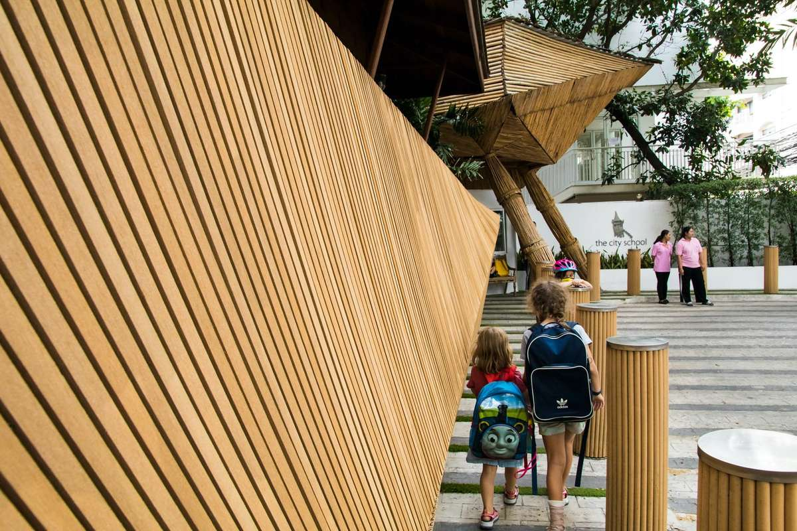

Everything a joining family needs, in the order you will need it. Read this once and the first month holds no surprises.

The gardens here are full of chatter and laughter, and the classrooms are busy with discovery. You are joining a community built on trust between staff, children and families, and the quickest way to feel that is at a La Comunità occasion.
New here in the middle of the year? Everything above still applies, minus the August dates: read the handbook, label everything, and start at quick answers.